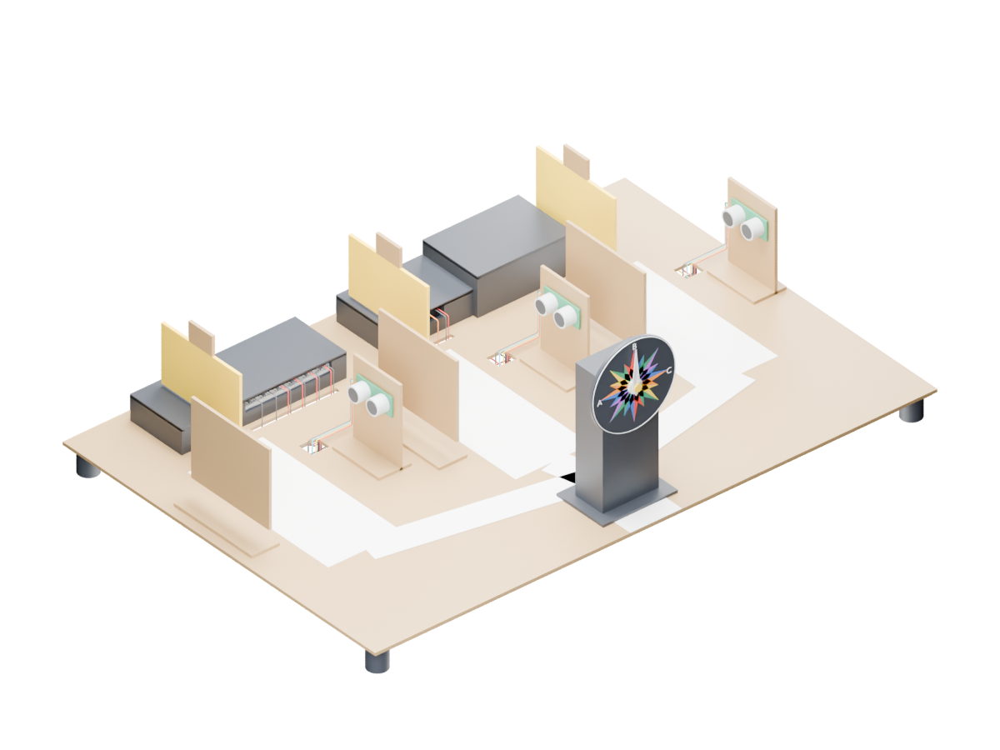

MAQUETE DO PROTÓTIPO FUNCIONAL
Da passagem
à direção.
Explore a montagem, entenda cada conexão e acompanhe como três rotas se transformam em uma indicação no totem.
Iniciar apresentação
Quatro formas de entender a Bússola
Apresentar. Acompanhar. Examinar. Aprofundar.
O projeto,
do início ao fim.
Uma narrativa visual sobre a maquete, suas peças, a operação e o que precisa ser conferido na montagem.
Abrir os slides ↗02 / BLUEPRINT INTERATIVASiga o caminho
de cada leitura.
Manipule os alvos e veja a detecção, a contagem, a decisão e o comando do servo, etapa por etapa.
Explorar funcionamento ↗03 / MAQUETE 3DAbra a montagem.
Isole cada peça.
Gire em 360°, examine as camadas e consulte dimensões, materiais, função e ligações elétricas.
Entrar no modelo ↗04 / DOCUMENTO EXPLICATIVOEntenda a lógica.
Consulte cada detalhe.
Um explainer em português com diagramas, dimensões, conexões e roteiro de demonstração. Inclui PDF de 10 páginas.
Ler o explainer ↗Da montagem ao teste.
Duas práticas isoladas, com código, PDF e circuito salvo.
Confira o HC-SR04.
TRIG D2, ECHO D3, alimentação e leitura de distância. Montagem na protoboard com contatos identificados.
Abrir prática e Tinkercad ↗02 / TRÊS SENSORESIntegre as três rotas.
Sensores A, B e C, servo D9, fonte de 5 V separada e GND comum. Código e mapa completos.
Abrir prática e Tinkercad ↗NO ACER NITRO OU NO COMPUTADOR DO GRUPO
Leve a maquete
com você.
O pacote contém o modelo e os recursos necessários para a apresentação local. Depois de baixar e extrair, o conteúdo principal pode ser aberto sem internet.
Ver instruções de abertura e compartilhamento →- 01Copie o ZIP completo
Baixe o repositório em Code → Download ZIP ou use uma cópia em pendrive.
- 02Extraia todos os arquivos
No Windows: botão direito no ZIP → Extrair Tudo. Preserve as subpastas.
- 03Abra ABRIR.html
Escolha Edge ou Chrome. Não precisa instalar Blender para visualizar a maquete.